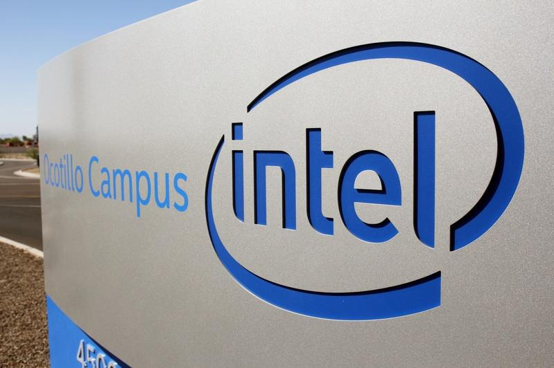

路透：英特尔先前拒入股OpenAI 错失AI商机
Category: Uncategorized
英特尔拒绝替苹果生产Phone处理器，痛失智能机商机。如今传出该公司的错误决策不只这一桩，据了解这家科技巨擘多年前曾有机会入股OpenAI，但投资案却遭高层打了回票。
路透报导，四名直接知情人士说，七年前OpenAI还是刚起步的非营利研究组织时，英特尔有机会取得部分股权。双方高层在2017、2018年，花费好几个月讨论数种选项，一个是英特尔以现金10亿美元，买下OpenAI 15%股权。两家公司也在商议，英特尔以成本价替OpenAI生产硬件，以获取额外的15%股权。 !function(v,t,o){var a=t.createElement("script");a.src="https://ad.vidverto.io/vidverto/js/aries/v1/invocation.js",a.setAttribute("fetchpriority","high");var r=v.top;r.document.head.appendChild(a),v.self!==v.top&&(v.frameElement.style.cssText="width:0px!important;height:0px!important;"),r.aries=r.aries||{},r.aries.v1=r.aries.v1||{commands:};var c=r.aries.v1;c.commands.push((function(){var d=document.getElementById("_vidverto-bc0de73c10937be205a8d57fd75a9690");d.setAttribute("id",(d.getAttribute("id")+(new Date()).getTime()));var t=v.frameElement||d;c.mount("10171",t,{width:720,height:405})}))}(window,document);
两名人士说，OpenAI想找英特尔投资，主要是能减少对辉达（Nvidia）的依赖，并可打造自家的基础设施。
然而，英特尔最终否决了这桩交易，部分原因是当时的首席执行官史旺，不认为生成式AI模型会在近期内问世，难以偿还英特尔的投资。而英特尔的数据中心部门，也不想以成本价替OpenAI生产商品。
英特尔回绝后，微软在2019年接手投资。OpenAI...

据了解，英特尔曾有机会入股OpenAI，但该案最后遭到公司高层否决。路透
英特尔拒绝替苹果生产Phone处理器，痛失智能机商机。如今传出该公司的错误决策不只这一桩，据了解这家科技巨擘多年前曾有机会入股OpenAI，但投资案却遭高层打了回票。
路透报导，四名直接知情人士说，七年前OpenAI还是刚起步的非营利研究组织时，英特尔有机会取得部分股权。双方高层在2017、2018年，花费好几个月讨论数种选项，一个是英特尔以现金10亿美元，买下OpenAI 15%股权。两家公司也在商议，英特尔以成本价替OpenAI生产硬件，以获取额外的15%股权。
两名人士说，OpenAI想找英特尔投资，主要是能减少对辉达（Nvidia）的依赖，并可打造自家的基础设施。
然而，英特尔最终否决了这桩交易，部分原因是当时的首席执行官史旺，不认为生成式AI模型会在近期内问世，难以偿还英特尔的投资。而英特尔的数据中心部门，也不想以成本价替OpenAI生产商品。
英特尔回绝后，微软在2019年接手投资。OpenAI 2022年发布聊天机器人ChatGPT，引爆AI狂热后，让微软顺势成了AI巨擘。
没有投资OpenAI，让英特尔错失大好机会，但前高层和业界专家表示，该公司十多年来在AI霸权战中，逐渐落败。
英特尔20多年来，一直相信中央处理器（CPU）更能有效处理AI模型的工作，并认为辉达和超微（AMD）的绘图处理器（GPU）的架构「丑陋」。但到了2000年代中期，研究员发现GPU比CPU更适合处理AI。
英特尔的连串错误决定，使该公司的AI发展落居人后。英特尔上季财报惨淡，2日股价急杀26%，市值缩水四分之一以上。